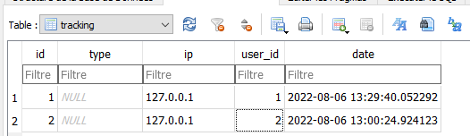
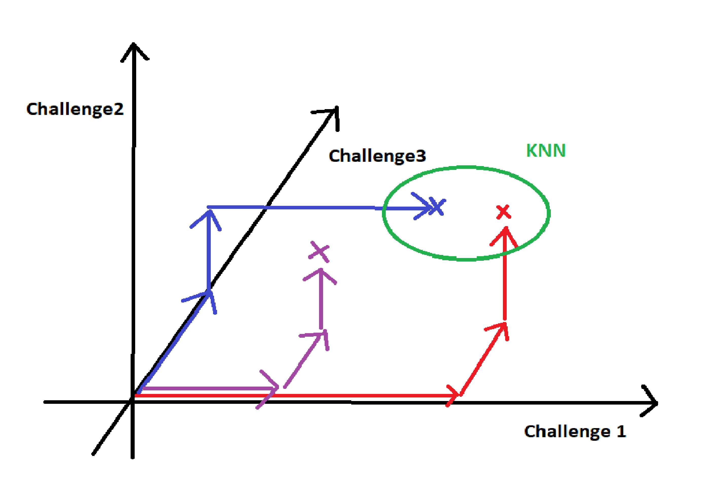

Lutter contre la triche en CTF ?
Planted August 23, 2022
Introduction
Dans cet article , je vais présenter les différentes possibilités pour empêcher la triche en compétition et notamment sur des ctf basés sur CTFd .
Je précise que ces techniques permettent de mettre en avant les comptes suspects. Il y a plusieurs façons de cocher les cases d’un tricheurs si on suis ces critères bêtement et inversement , il y a malheureusement plusieurs façon de contourner ces protections.
Tous ce que je vais expliquer ici sert donc à mettre en avant un compte ou une équipe afin que des admins procède à une vérification manuelle et agissent en conséquence.
Le Flag Hoarding
Commençons par les bases , le flag Hoarding est le fait de garder tous les flags et de les submits au dernier moment pour remonter dans le scoreboard d’un coup et surprendre tout le monde .
Le problème
En rentrant tous les flags d’un coup, il est impossible de différencier les challenges que l’on à légitimement récupérer des challenges volés , échangés avec d’autres équipes.
Pour pallier à ce problème , le système de First-Blood est censé décourager ce genre de pratique mais cela n’empêche en réalité pas grand-chose …
Comment l’empêcher ?
La manière la plus simple est de l’interdire . C’est peut-être évident mais ce n’est pas toujours spécifié dans les règles !
Il est trop courant que les admins de CTFs laissent passer des choses anormales.
En effet , beaucoup de trop d’admins n’osent pas bannir certaines équipes , même ayant des preuves évidentes de tricheries .
Plus sérieusement , il est assez aisé de détecter cette pratique car CTFd log toutes les heures de flag de chaque équipe !
On peut donc facilement scrapper toutes données du CTFd grâce à <code>leur formidable API</code> On peut pour chaque équipe, faire la moyenne des heures de flags et regarder si elle est dans le dernier 8ème du temps de la compétition par exemple .
Exemple:
{
"success": true,
"data": [
{
"date": "2018-11-26T03:43:37+00:00",
"type": "correct",
"team": {
"name": "Viral574",
"id": 2
},
"id": 5,
"challenge": {
"name": "Too Many Puppers",
"id": 2,
"category": "Forensics",
"value": 100
},
"user": {
"name": "Tiffany",
"id": 29
},
"challenge_id": 2
}
],
"meta": {
"count": 1
}
}
Le Partage de compte
Une autre forme de triche est le partage de compte.
En effet, dans la plupart des CTFs , le nombre de personnes par équipe est limité pour éviter un trop gros écart entre toutes les équipes.
Cela n’empêche en rien la triche malheureusement … Chaque équipe n’a qu’à créer un compte de team et le partager à toute son équipe.
On se retrouve ainsi impuissant contre une équipe de 20 personnes cachés derrière un unique compte …
(On a tous les mêmes noms en têtes .. )
Comment l’empêcher ?
Méthode 1:
Il est théoriquement facile de l’empêcher , en tous cas dans la plupart des cas .
(Si on suppose que l’équipe malveillante n’utilise pas de vpn commun)
Chaque personne a une ip différente et par chance, CTFd log toutes les ips pour chaque compte !
On peut donc facilement avec une vérification manuelle , détecter les multicomptes . Encore une fois , tous dépend de l’implication des admins dans la lutte contre les tricheurs …

(Le développement d’un plugin pour CTFd semble assez documenté donc je garde l’idée de faire une auto-détections des multicomptes dans un projet futur)
Méthode 2:
La seconde techniques est bien plus basique …
Il suffit de bannir toutes les équipes avec le même nom ou un nom similaire à leurs utilisateurs :
Exemple:
- Team: SuperFlag_Team
- User: SuperFlag
C’est courrant que des équipes partages leur compte de la sorte , cela devrais être interdit et encore une fois , inscrit dans les règles .
L’api de CTFd peut encore nous permettre de scrapper toutes les données rapidement et proprement.
Les doubles comptes
Sur Discord
La plupart des CTF se déroule avec un serveur DISCORD lié pour pouvoir contacter les admins / partager des informations avec les joueurs.
De plus, il est aisé d’avoir plusieurs comptes sur cette plateforme et il n’est donc pas rare que certaines personnes se créent d’autres comptes secondaires pour échanger/voler les solutions d’autres équipes à leur insu …
Je peux conseiller à tous les chefs d’équipes de CTFs de bien gérer les permissions sur les salons de leurs serveurs personnels et de faire attention à qui a accès aux messages de l’équipe .
Un autre souci est que grâce à ces doubles comptes, les tricheurs n’hésitent pas à aller demander de l’aide à d’autres personnes en message privés en échange d’informations ou même parfois de flag directement …
J’invite encore une fois tout le monde à bloquer ses messages privés lors de CTF en dehors de vos amis discord , cela vous évitera de vous faire harceler durant la compétition. Vous pouvez aussi choisir un nom différent de votre pseudo Discord lors de l’inscription au CTF pour ne pas être repéré sur le serveur commun à tous.
Comment empêcher les doubles compte discord ?
On peut d’après moi faire 3 choses pour empêcher les doubles comptes discord.
-
La première chose est de faire un bot qui interdit l’accès au serveur si la date de création du compte est inférieur à une *date minimum , par exemple 1 semaine.
-
La seconde est de n’
accepter que les comptesayant un email et un numéro de téléphone vérifié . -
La dernière est d’utilisé une sorte captcha de vérification :
On peut supposer que si une personne utilise 2 comptes, elle utilisera le même pc . Se basant sur ça, je vois 2 cas possibles .
-
Cas 1: La personne utilise la fonctionnalité nouvelle de discord pour avoir plusieurs comptes sur le même pc . -
Cas 2: La personne utilise une version modifié de Discord pour avoir son deuxième compte dessus . Je parle ici des versions béta de Discord comme :Discord Canarypar exemple :
Dans le premier cas :
On peut utiliser un serveur http pour récupérer l’adresse ip et le user-agent de la personne qui rejoins le serveur.
- Pourquoi ?
On va simplement créer une base de données ou l’on va renseigner le nombre d’entrée et de sortie d’un utilisateur.
Je m’explique :
Pour chaque entrée, un bot discord envoie un lien vers un équivalent à pipedream.com.
Les admins récupèrent donc l’adresse IP ainsi que le User-Agent .
Ce même bot ajoute 1 dans une Base de Donnée à la clé sha1(ua+ip)
Si on considère que le tricheur clique sur le lien depuis discord , ce sera le navigateur par default qui ouvrira ce lien . Ainsi, 2 comptes sur un même pc auront probablement la même pseudo-signature et le score dans la base de donnée sera supérieur à 1 .
Dans le second cas :
Un bot discord peut envoyer un message quelconque dans un Channel spécialisé et demander a l’utilisateur de copier le lien discord correspondant à ce message.
On peut en backend, associé l’id du message a l’utilisateur pour ainsi vérifier son entrée.
Celui-ci doit ensuite lui renvoyer ce dit id.
Si on regarde le lien d’un même message copié depuis différents discord . On se rend vite compte du type de discord que la personne utilise .
https://discord.com/channels/590691085420986369/780222038974922754/1011944062661689374
https://canary.discord.com/channels/590691085420986369/780222038974922754/1011944062661689374
Cette technique joue sur la naïveté des joueurs et cela nous permet donc de déterminer si cette personne utilise une application tierce pour discord.
En liant toutes ces techniques dans un unique bot Discord . On peut aussi ajouter d’autres paramètres tel que :
- L’existence d’une photo de profil.
- Le Type de Pseudo
Et enfin obtenir un score de double-compte
Sur CTFd
Qu’en est-il de CTFd ? On peut prendre le cas d’une équipe qui cherche à avoir un Hint mais refuse de payer des points pour l’obtenir.
Le fait de créer un second compte CTFd pour récupérer les Hints et normalement interdit mais c’est toléré dans la plupart des compétions.
*(Je ne sais pas si c’est par habitude ou par impuissance des admins) *
Le problème le plus évident et que même si on arrive à détecter un double compte . Il est surement déjà trop tard pour le bannir car la personne à déjà récupéré son HINT. Nous verrons après comment empêcher ca .
-
La première méthodeest bien sur l’ip. Même si c’est facilement bypassable , c’est l’enchainement de protection qui feront décourager les tricheurs. -
La seconde méthodesur le comportement d’un compte.
Un tricheur aura souvent un comportement similaire :- Création d’un compte en plein ctf
- Flag de 2/3 challenges rapidement
- Récupération d’un Hint.
- Plus de Flag
Dans un premier temps , si on considère qu’on veut bannir ces comptes . Il “suffit” de contrôler les temps de flags pour les comptes crée après le lancement du CTF.
(On détecte les joueurs qui flag rapidement 3 challenges puis prennent un Hint .)
Mais on peut aussi mettre plus de contrainte sur la récupération des Hints.
La manière la plus simple est d’empêcher la création de compte après le début du CTF.
On peut aussi par exemple :
-
Mettre une limite temporaire:
(Pas de Hint pendant 5h aprés de la création d’un compte pendant la compétition). -
Mettre une limite de point minimumpour obtenir un Hint .
*(Cela pousserai le tricheur à rentrer beaucoup de flag d’un coup et le système précédent détecterai rapidement l’anomalie) *
Le Share flag
Ici, rien de bien nouveau. Il est bien difficile de savoir si une personne a réellement solutionné un challenge.
On peut voir 2 manière de détecter le Share flag:
- Se baser sur les temps de flags
- Se baser sur les Flags dupliqués.
Ici
-
La première méthodeest expliqué par <strong>Worty</strong> dans cette vidéo Il explique que l’on peut calculer le temps qu’un utilisateur prend pour résoudre un challenge.
On peut avec quelques modifications de CTFd , récupérer l’heure de téléchargement/ouverture d’instance d’un challenge et ainsi calculer la différence avec l’heure à laquelle une équipe flag .Cette différence de temps et ensuite comparé à un temps référence inscrit manuellement par l’auteur du challenge et si le temps de flag est nettement inférieur au temps normalement requis. On peut considérer l’utilisateur comme suspect.
-
La seconde méthodeest basé sur l’unicité des flags . Pour les challenges dynamiques notamment. On peut baser la génération des flags sur l’ipdu joueur De plus, CTFd accepte les regexs comme vérification de flag !
On peut donc imaginer le cas suivant :- Je me connecte en TCP à un challenge avec l’ip :
192.168.1.48 - Le challenge modifie sont flag de base:
flag{Th1s_i5_@_Flag}devientflag{Th1s_i5_@_Flag_+ SHA1(192.168.1.48) +}
(libre à vous de modifier pour avoir une fin de flag non prédictible)
- Je résoud mon challenge et je récupère mon flag personnalisé
- Je le submit est il est accepté :
- Le regex vérifie uniquement :
Th1s_i5_@_Flag
Le serveur effectue via un plugin une vérification : Il hash l’ip du joueurs et la compare à la fin du flag.
- Le regex vérifie uniquement :
Là où c’est intéressant, c’est qu’on peut rapidement détecter si un autre utilisateur à déjà soumit ce flag .
On à donc trouvé 2 tricheursLa subtilité ici est que l’on peut évaluer un
score de triche. En effet, on peut imaginer que si le SHA1 du flag ne correspond pas au SHA1 de l’ip qui submit le flag , on ajoute auscore de triche1. On se retrouve à la fin du CTF et on a une idée de qui triche ou non.Malheureusement , une personne peut souvent submit un flag qu’un de ses collègue a trouvé . Il est donc important de relativiser ce
score de tricheet de le mettre en corrélation avec les autres techniques. - Je me connecte en TCP à un challenge avec l’ip :
Le Team up
On devine assez facilement quand 2 équipes jouent ensemble :
- Même ordre de challenge résolus.
- Heures qui coïncident
- Etc…
Le problème est que ce team-up est visible quand on trace le graphique du scoreboard et seules les 10 premières équipes sont inspectés !
J’ai 2 idées pour détecter l’entraide entre équipes.
Méthode 1:
(Cette méthode s’applique à la fin du CTF.)
Pour chaque challenge, on va récupérer :
- L’ordre et les heures de flags
- Le nombre de points
- Le nombre de solves
- Le pourcentages de solves sur tous le ctf
Nous allons créer un graph avec des score inter-équipe.
Imaginons le challenge ci-dessous:
- Point 400
- % de solves : 5%
- Ordre :
Equipe 1 | 12h
Equipe 2 | 13h
Equipe 3 | 14h
Equipe 4 | 15h
Equipe 5 | 16h
Equipe 6 | 16h02
Equipe 7 | 17h
Pour chaque équipe , on va récupérer les N équipes qui ont flag avant nous . (Posons X=5)
Puis, on va évaluer entre chaque paire , un score en fonction :
- Du nombre de point (La difficulté du challenge)
- Le % de solves (Était-il vraiment si difficile ?)
- Le nombre de personnes
- La différences de temps entre les 2 équipes qui flags.
Ainsi, pour ce challenge , dans cet exemple ; l'équipe 6 aura un plus gros score avec l'équipe 5 que l'équipe 1
car l'équipe 6 a flag ce chalenge 2min après l'équipe 5.
Rien d’anormale jusqu’ici mais en additionnant tous les scores inter-équipes sur tous les challenges , on peut ainsi rapprocher différentes équipes et visualiser lesquelles sont proches des autres .
La technique fonctionne aussi en rapprochant les utilisateurs qui flag , des équipes précédentes
*Cela permettrai de détecter si un utilisateur copie les flags d’une autre équipe en cachette. *
Méthode 2:
Cette méthode vient de <strong>Podalirius</strong>.
On va utiliser l’algorithme KNN pour encore une fois, regrouper les différentes équipes.
On va créer un espace à N dimensions , avec N le nombre de challenges
Pour chaque solve de chaque équipe, on va créer un vecteur qui a pour norme : Le temps de flag du challenge.
Grâce à l’algorithme KNN , on va pouvoir former des groupes et ainsi voir qui flag quel challenges en même temps.
Illustration
On peut considérer un CTF avec 3 challenges uniquement. Ainsi, on forme un espace à 3 dimensions
Pour chaque challenge, on renseigne les dates de flag de chaque équipe :
- En rouge , l’équipe 1
- En bleu , l’équipe 2
- En violet , l’équipe 3
Voici à quoi cela peut ressembler :

les équipe 1 et 2 ont flag les 3 challenges dans la même période, contrairement à l'équipe 3
Ainsi, l’algorithme est capable de faire des groupes et ainsi de lié plusieurs équipes / joueurs entre eux !
Finalement
Il est indispensable pour garantir un déroulement sain d’un de mettre en place des techniques contre les tricheurs . Cela va de la vérification manuelle à l’automatisation de certaines tâches .
Je compte bien , d’ici quelques jours/semaines , sortir différentes outils en lien avec ce sujet sur mon github
Vozec